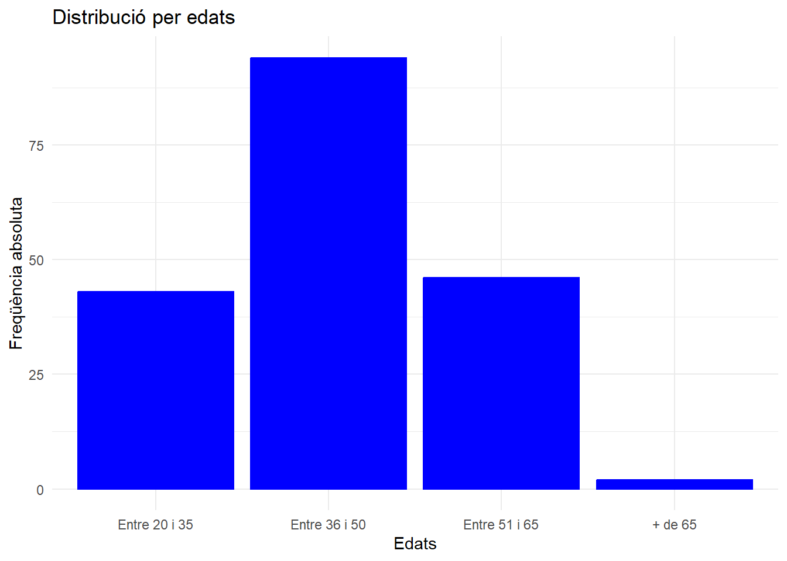
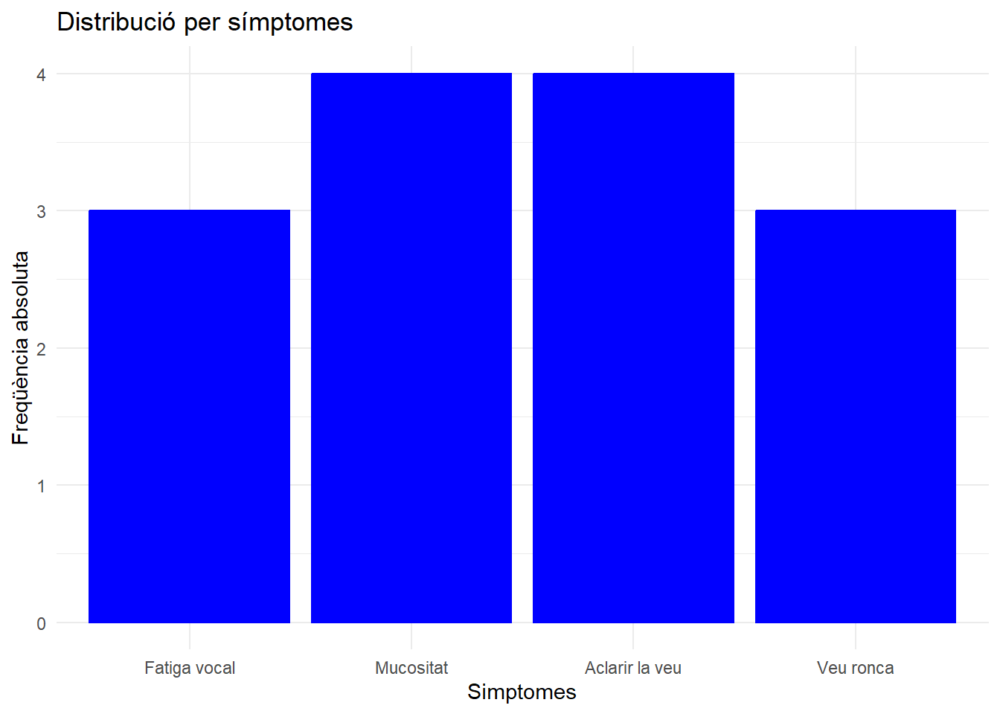
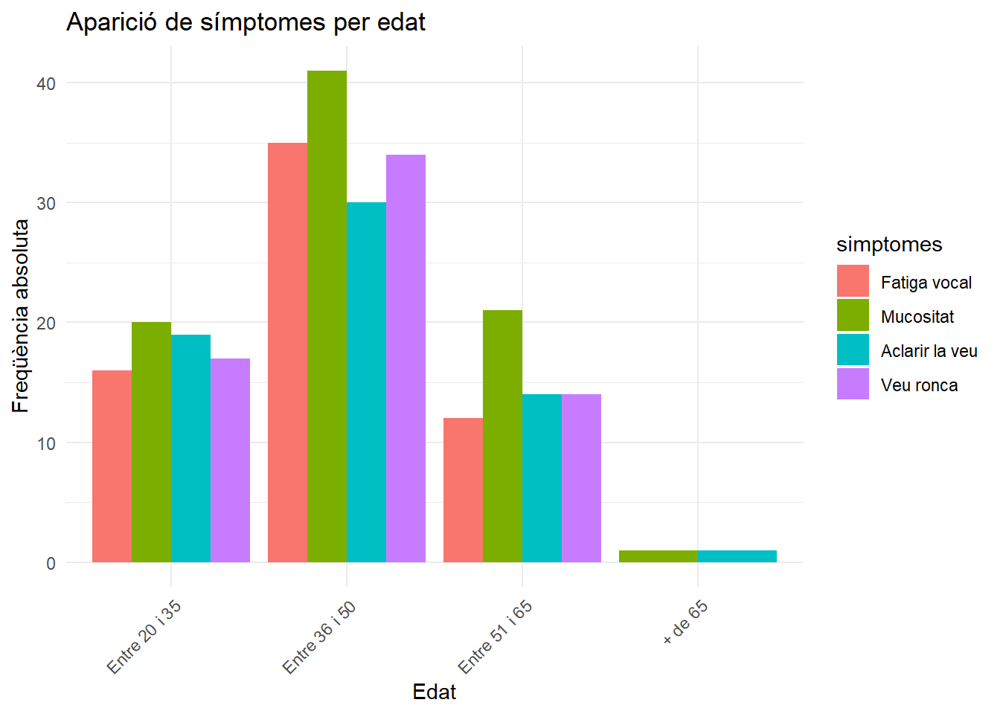
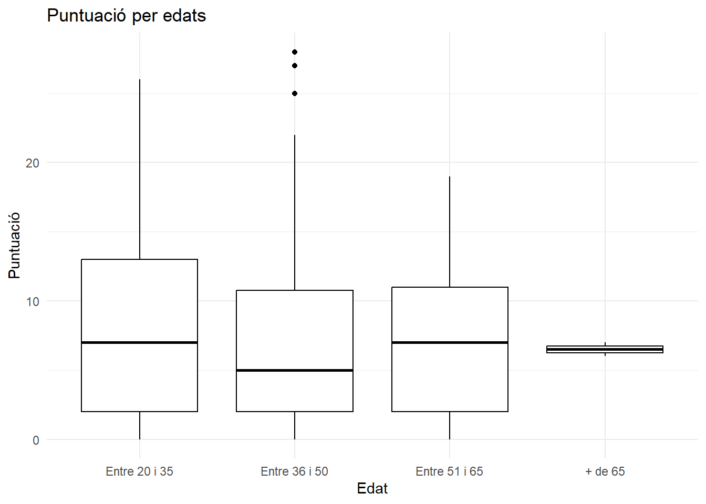
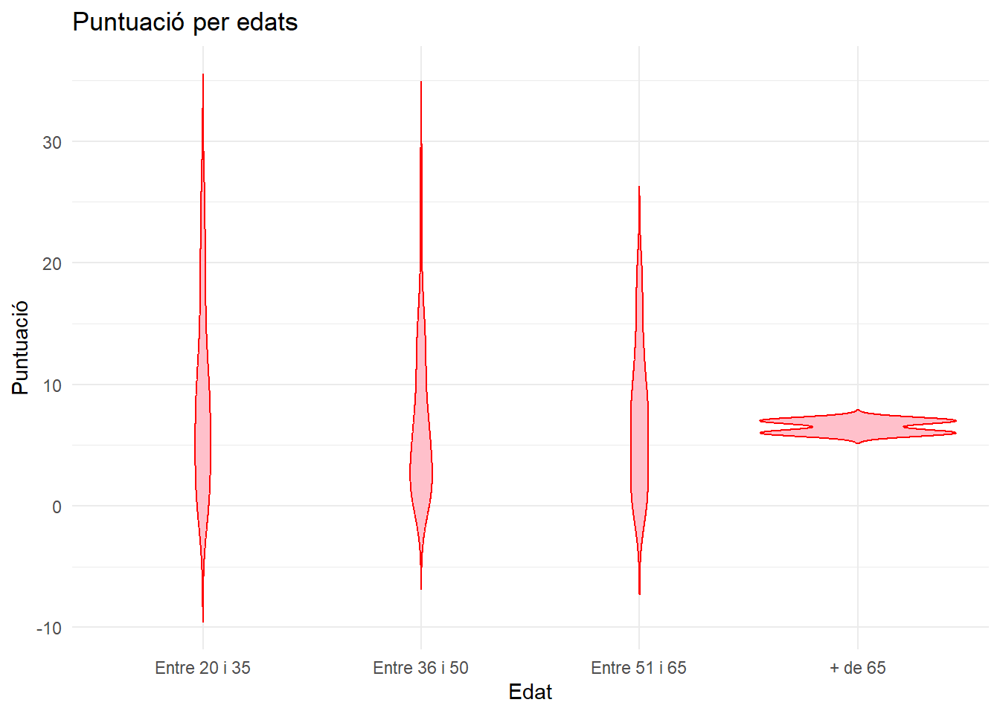

raw_data <- read.csv("Salut_Vocal_anonimizada.csv", sep = ";")
#La darrera columna no conté cap tipus d'informació
raw_data <- raw_data %>% select(-last_col())
#Renombram les variables que emprarem
raw_data <- raw_data %>% rename(
Importancia_veu = "De.l.1.al.10.quina.importancia.té.la.veu.per.a.vostè.",
Sexe = "Sexe",
Lloc_feina="On.fa.feina.",
Cos_docent="Cos.docent",
Edat="Quina.edat.té.",
Activitats_fisiques="Practica.esport.o.fa.alguna.activitat.física.",
Importancia_deport="De.l.1.al.10.quina.importancia.té.la.pràctica.de.l.esport.o.activitat.física.per.a.vostè.",
Calitat_son="Té.una.bona.qualitat.del.son.",
Cafe="Consumeix.cafè.",
Tabac="Consumeix.tabac.",
Alcohol="Consumeix.alcohol.",
Begudes_gas="Consumeix.begudes.amb.gas.",
Dieta_saludable="De..l.1.al.10.assenyali.si.segueix.una.dieta.equilibrada.i.saludable.",
Diagnostic="Ha.estat.diagnosticat.per.un.metge.o.metgessa.d.alguna.de.les.malalties.següents.",
Patologia="Si.ha.marcat.alguna.de.les.opcions.anterior..especifiqui.la.patologia.",
Diagnostic_especialista="Ha.estat.diagnosticat.per.un.especialista.mèdic..otorinolaringòleg..foniatra..d.alguna.lesió.a.les.cordes.vocals.",
Simptomes="Aquest.mes.ha.tengut.algún.símptoma.vocal.dels.següents..Es.pot.marcar.més.d.una.opció",
Operacio="L.han.operat.de.les.cordes.vocals.",
Temps_alteracio="Si.té.alguna.alteració.de.la.veu..recorda.quin.temps.fa.que.va.començar.",
Baixa_veu="En.alguna.ocasió..ha.estat.de.baixa.laboral.per.problemes.de.veu.",
Baixa_llarga="Si.la.resposta.a.la.pregunta.anterior.és.afirmativa..indiqui.la.periodicitat..cada.any..trimestre.....i.la.durada.de.la.baixa.més.llarga.i.la.malaltia",
Problema_curs22_23="Ha.tengut.problemes.de.veu.importants.i.que.li.han.dificultat.la.feina.al.llarg.del.curs.2022.2023.",
Formacio_veu="Té.formació.sobre.salut.vocal.",
Medicacio="Pren.alguna.o.algunes.de.les.medicacions.següents..Es.pot.marcar.més.d.una.opció",
Higiene_vocal="Segueix.una.rutina.d.higiene.vocal.",
Activitats="Fa.alguna.de.les.activitats.següents..Es.pot.marcar.més.d.una.opció",
No_m_escolten="La.gent.em.sent.amb.dificultat.a.causa.de.la.meva.veu",
No_m_escolten_sorolls="La.gent.no.m.entén.en.llocs.sorollosos",
Alteracio_vida_social="Els.meus.problemes.amb.la.veu.alteren.la.meva.vida.personal.i.social",
Desplaçat_conversacio="Em.sent.desplaçat.de.les.converses.per.la.meva.veu",
Rendimient_laboral="El.meu.problema.amb.la.veu.afecta.el.rendiment.laboral",
Tensar_veu="Not.que.necessit.tensar.la.gola..gargamella..per.produir.la.veu",
Calitat_imprevisible="La.qualitat.de.la.meva.veu.és.imprevisible",
Em_molesta="La.meva.veu.em.molesta",
Minusvalia="La.meva.veu.em.fa.sentir.certa.minusvalidesa",
Gent_pregunta="La.gent.em.pregunta..què.et.passa.amb.la.veu."
)Símptomes vocals en profesors
Sergio Rivadulla, Jaume Maimó i Àngela Martí
https://github.com/angelamartic/Practica2.git
Lectura i neteja de les dades
Llegim les dades del fitxer “Salut_Vocal_anonimizada.csv” i cambiem els noms de les variables.
Anem a netejar les variables i a convertir les categòriques en factors, a excepció de “Importancia_veu” i “dieta_saludable”, que les deixarem com a qualitatives discretes.
raw_data <- janitor::clean_names(raw_data)
dades <- raw_data %>%
mutate(across(-c(importancia_veu, dieta_saludable),
as.factor))
dades$edat <- dades$edat %>% factor(levels = c("Entre 20 i 35", "Entre 36 i 50", "Entre 51 i 65", "+ de 65"))
dades$simptomes <- dades$simptomes %>% as.character()
simptomes_separat <- dades %>% separate_rows(simptomes, sep = ",\\s*")
contar_simptomes <- simptomes_separat %>% group_by(edat, simptomes) %>%
summarise(Conteo = n()) %>%
ungroup()
contar_simptomes <- contar_simptomes %>% filter(simptomes != "escanyada")
contar_simptomes$simptomes <- contar_simptomes$simptomes %>% factor(levels=c("Fatiga vocal","Mucositat","Necessitat d' aclarir la veu de manera persistent","Veu ronca"),labels=c("Fatiga vocal","Mucositat","Aclarir la veu","Veu ronca"))Ara, per a calcular l’índex de qualitat de veu (VHI), anem a seleccionar les variables començant per la 28 fins a la 37 per a convertir-les en qualitatives discretes i sumar-les.
dades_1<-dades %>% select(28:37) %>%
mutate(across(everything(), ~case_when(
. == "Mai" ~ 0,
. == "Gairebé mai" ~ 1,
. == "A vegades" ~ 2,
. == "Gairebé sempre" ~ 3,
. == "Sempre" ~ 4
))
)
dades_1<-dades_1 %>% mutate(VHI=rowSums(dades_1))Finalment, eliminarem les variables de la 28 a la 37 i afegim la variable VHI.
dades<-dades %>% select(-c(28:37))%>%
bind_cols(VHI=dades_1$VHI)Objectius del projecte
L’objectiu principal d’aquesta enquesta és analitzar si la formació en veu que té l’enquestat influeix en la percepció de qualitat de la mateixa. En concret al nostre grup ens ha tocat treballar sobre la relació entre la veu, l’edat i els símptomes vocals; intentarem respondre a la pregunta: ¿Hi ha qualque edat amb més incidències de símptomes vocals? D’aquesta manera intentarem arribar a una conclusió que ens permeti valorar si la veu es deteriora amb l’edat, o pel contrari no existeix una relació important entre ambdós factors.
Emprarem, en primer lloc, les dades de la variable edat que ens ve donada en forma de dades ordinals. Farem un gràfic per visualitzar com es distribueixen els enquestats a les diferents categories. (Entre 20 i 35, Entre 36 i 50, Entre 51 i 65, + de 65).
També utilitzarem els resultats del test que s’ha inclòs al final de l’enquesta que ens venen donats com dades quantitatives discretes que es sitúen entre 0 i 40; on més puntuació implica que l’enquestat té una pitjor salut de la veu.
Per acabar creuarem l’edat amb la puntuació per concloure si existeix la relació que cercam o no, i també farem el mateix amb la variable símptomes.
Anàlisis de les dades
Com hem indicat, en primer lloc, farem un gràfic, per veure com es distribueixen els enquestats a les diferents categories d’edat.
grafic1 <- dades %>% ggplot(aes(x = edat)) + geom_bar(color = "blue", fill = "blue") + labs(x="Edats", y="Freqüència absoluta") + ggtitle("Distribució per edats") + theme_minimal()
grafic1
Per tant, tenim més enquestats d’ entre 36 i 50 anys , i pràcticament cap de +65 anys. Això pot afectara l’anàlisi, ja que les dades no es troben uniformement distribuïdes entre les quatre categoríes.
En segon lloc, farem un gràfic per veurer quin és el simptoma més freqüent entre els enquestats, on fàcilment veiem que són la mucositat i la necessitat d’aclarir la veu de manera persistent.
grafic2 <- contar_simptomes %>% ggplot(aes(x=simptomes)) + geom_bar(color = "blue", fill = "blue") + labs(x="Simptomes", y="Freqüència absoluta") + ggtitle("Distribució per símptomes") + theme_minimal()
grafic2
Ara, per respondre aquesta pregunta, representarem un diagrama de barres agrupat entre l’edat i els simptomes:
grafic3 <- contar_simptomes %>% ggplot(aes(x = edat, y = Conteo, fill = simptomes)) +
geom_bar(stat = "identity", position = "dodge") +
labs(title = "Aparició de símptomes per edat", x = "Edat", y = "Freqüència absoluta") +
theme_minimal() +
theme(axis.text.x = element_text(angle = 45, hjust = 1))
grafic3
Veiem que a totes les edats predomina la mucositat, seguit de la resta de símptomes, que tenen una freqüència semblant.
Per poder treure una conclusió més clara a la pregunta que ens demanen, que recordem que era si “¿Hay alguna edad con mayor incidencia de síntomas vocales?” anem a fer en primer lloc, un boxplot, per visualitzar millor com es distribueix la puntuació:
grafic4 <- dades %>% select(edat, VHI) %>% ggplot(aes(x = edat, y = VHI)) + geom_boxplot( color = "black") + labs(x = "Edat", y = "Puntuació") + ggtitle("Puntuació per edats") + theme_minimal()
grafic4
Interpretarem aquest gràfic pels grups d’edats:
Entre 20 y 35: L’ àrea de la caixa ens mostra que la majoria de les puntuacions estan entre aproximadament 5 i 12, és a dir, la puntuació és baixa. La mitjana està prop de 10, cosa que indica que aproximadament el 50% de les persones en aquest grup tenen puntuacions inferiors a 10.
Entre 36 y 50:
El rang interquartílic és similar al grup anterior, té una mitjana al voltant de 10. En canvi, hi ha alguns valors aïllats, la qual cosa ens indica que algunes persones en aquest grup tenen puntuacions que difereixen molt de la resta.
- Entre 51 i 65:
Aquest grup té una distribució semblant als dos primers, amb una mitjana al voltant de 10 i una dispersió més baixa que el grup de 36-50. Això suggereix que els problemes vocals són menys variables en aquest grup.
- Més de 65:
D’aquest grup no podem dir res ja que pràcticament no hi ha dades. Només podem saber que la puntuació dels enquestats és menor que 10.
Finalment, farem un diagrama de violí:
grafic5 <- dades %>% select(edat, VHI) %>% ggplot(aes(x = edat, y = VHI)) + geom_violin(trim = F, fill = "pink", color = "red") + labs(x = "Edat", y = "Puntuació") + ggtitle("Puntuació per edats") + theme_minimal()
grafic5 
Els grups més joves (20-35 i 36-50) tenen més variabilitat en els problemes vocals, amb puntuacions que es dispersen més al llarg del rang. A mesura que augmenta l’edat (51-65 i més de 65), sembla que les puntuacions són més homogènies, amb menys dispersió i una concentració més forta al voltant d’una puntuació central (prop de 10). El grup de més de 65 anys és el que té la distribució més concentrada i homogènia, cosa que pot suggerir que els problemes vocals en aquest grup són més consistents entre els individus, però el més probable és que sigui a causa de les poques respostes que hi ha.
Observem que els dos ùltims gràfics ens donen la mateixa informació. Per tant, es podria concloure que els grups més joves tenen una major incidència i variabilitat de símptomes vocals en comparació dels grups de més edat, on la severitat dels símptomes sembla més uniforme.
Per acabar l’informe, anam a fer una prova de test inferencial. Aplicarem el test qui-quadrat per comprovar si l’edat i els símptomes són variables independents:
dades_2 <- dades %>% subset(select = c(edat,simptomes))
chisq.test(dades_2$edat,dades_2$simptomes)
Pearson's Chi-squared test
data: dades_2$edat and dades_2$simptomes
X-squared = 22.501, df = 42, p-value = 0.994El test ens està avisant de que la freqüència esperada de qualque nivell és inferior a 5, i per tant, no es pot assegurar que el resultat que ens dona el test sigui correcte. Per solucionar aquest problema, podem estimar el p-valor fent simulacions amb el mètode de Montecarlo.
set.seed(2024)
chisq.test(dades_2$edat, dades_2$simptomes, simulate.p.value=TRUE, B=5000)
Pearson's Chi-squared test with simulated p-value (based on 5000
replicates)
data: dades_2$edat and dades_2$simptomes
X-squared = 22.501, df = NA, p-value = 0.9796Un p-valor tan gran no ens permet rebutjar la hipòtesi nul·la de que les variables edat i símptomes siguin independents.
Per tant, no hi ha evidència clara per afirmar que existeix o no una relació entre l’edat dels enquestats i els símptomes que afirmen haver mostrat durant el darrer mes.